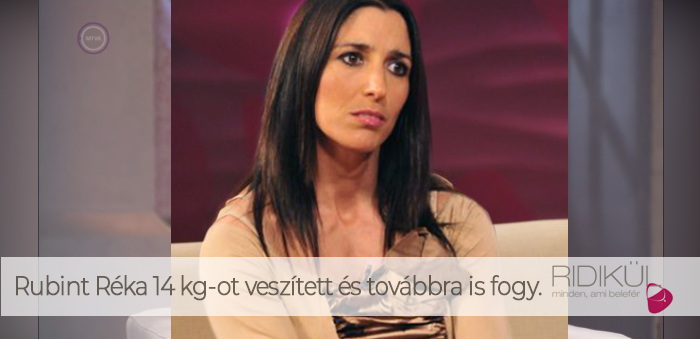
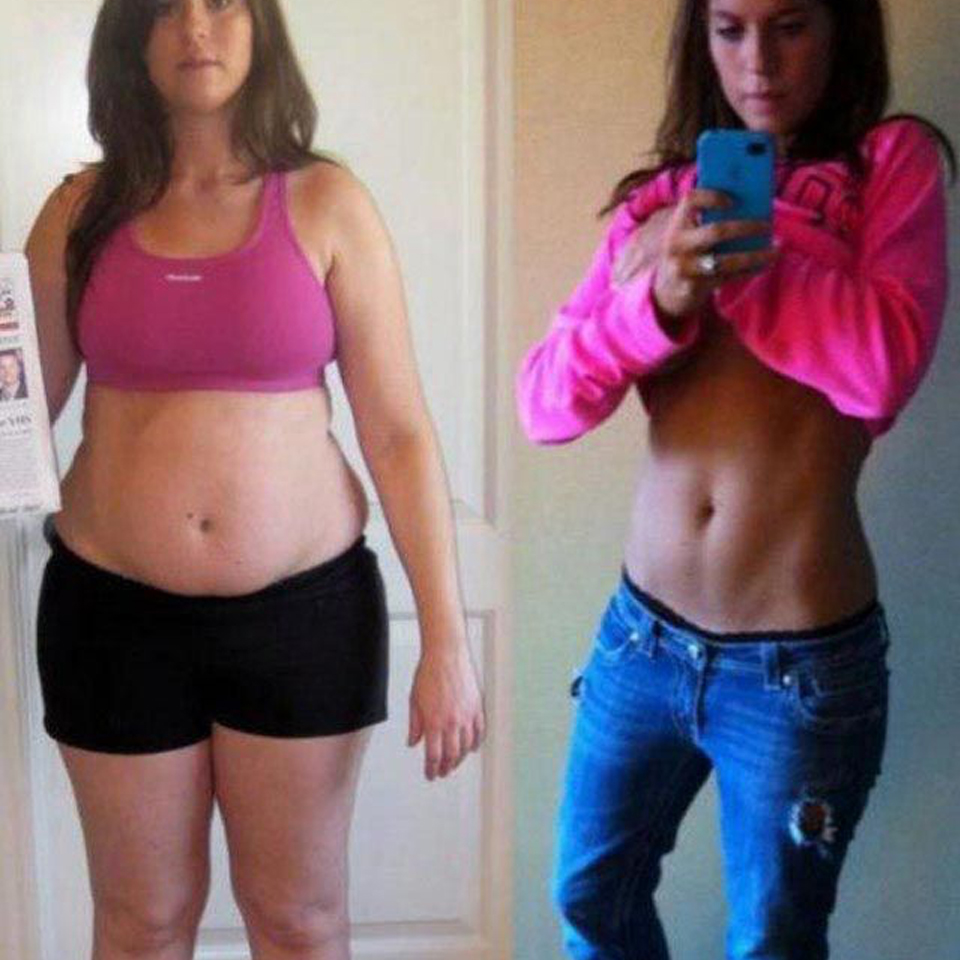
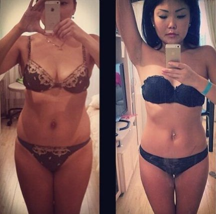
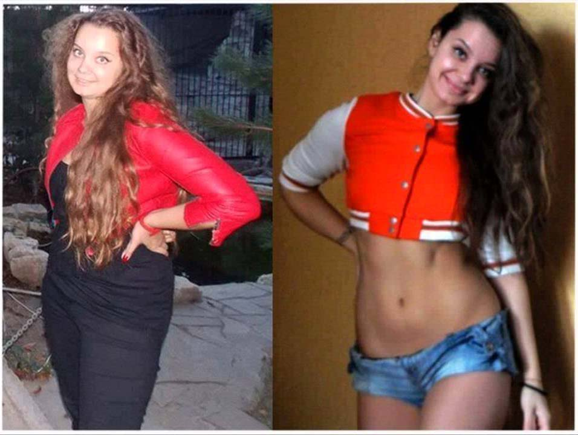
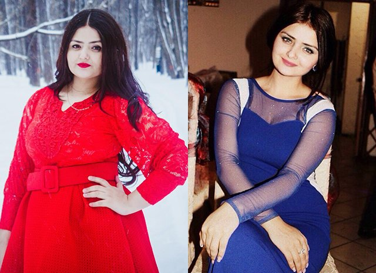

A FOGYÁS TÖRTÉNETE
Egy hónap alatt Rubint Réka 14 kg-ot fogyott, és a "Ridikül" program stúdiójában elmondta, hogyan sikerült ezt elérni!
Dióssy Klárival: Budapest. Talk show "Ridikül". Ebben a stúdióban olyan igaz történetekről beszélünk, amelyeket lehetetlen elhallgatni.
Réka magasságához képest valamivel több mint 75 kg. volt, de váratlanul mindenki számára, szó szerint a szemünk láttára hirtelen elkezdett fogyni.

Egy hónap alatt Réka fogyott majdnem 14 kg! És mai napig hallgat, szó szerint elrejti titkos módszerét. De az edző beleegyezett, hogy csak az "Ridikül" program stúdiójában felfedi a csodálatos fogyás titkát, és ez a mai programunk fő témája!
Dióssy Klárival: Üdvözlöm, Réka! Nagyon jól néz ki! Sok legendát hallotunk a csodálatos fogyásáról. A havi 14 kg-os súlycsökkenés – ez tényleg nagyon sok. Hogyan sikerült?
Rubint Réka: Üdvözlök mindenkit! Soha nem aggódtam a súlyom miatt, de az utóbbi időben extra kilókat szedtem fel. Egy darabig úgy tűnt számomra, hogy az én koromban ez a kis túlsúly semmit nem jelent. De túl messzire ment a dolog. Ráadásul a sportolás számomra nehezen megy és az életkorral egyre kevésbé segít, a diétázás meg nem kivitelezhető a zsufolt munkarendem miatt.
Dióssy Klárival: Megerősítem! És a jelenlegi megjelenése - hihetetlen! Igaz, hogy le lehet fogyni 14 kg. diéták és fárasztó edzések nélkül?
Rubint Réka: Köszönöm a bókót! És ez valóban igaz, diéták, edzéseket és veszélyes vegyi anyagok nélkül fogytam.
Dióssy Klárival: Mi volt ez, valami új diéta vagy plasztikai sebészet? Mondja el nekünk, mi történt? Réka, most már teljesen új személy lett!
Rubint Réka: Az edzőterem nehézen jött be nekem. A diétákhoz fűződő kapcsolatok szintén nem jöttek létre, soha nem értettem, hogy az emberek ilyen módon miért kínozzák magukat. Napi fél szem valami magvacska? Nem vagyok egy Hamupüpőke! Mit tehettem volna? Kezdtem elcsüggedni és itt jött segítségül a barátnőm. Látva, hogy milyen állapotban voltam, javasolta, hogy próbáljak ki meg egy lehetőséget – Choco Lite. Csak egy teával, gyümölcslével vagy vizzel igyam meg naponta háromszor, és ne gondoljak semmire, nézzem meg az eredményt. Azt hittem csak tréfál velem, hogy felvidítson, de ragaszkodott hozzá, és úgy döntöttem, hogy kipróbálom.
Dióssy Klárival: És mi történt ezután? Ez az Choco Lite produkált ilyen csodálatos eredményeket?
Rubint Réka: Igen, pontosan Choco Lite, felgyorsítja az anyagcserét a szervezetben. Egy hét "kísérlet" után igazán jobban éreztem magam, valami könnyedség jelent meg a testemben. Nem változtattam semmit az étrendben, ugyanazokat az élelmiszereket ettem, de fogytam. Úgy tűnt számomra, hogy 1,5 - 2 kg-ot fogytam, de amikor a mérlegre álltam, megdöbbentem - MINUSZ 4 kg! Hogy van ez? Ilyen hatás három adagtól naponta? Elkezdtem tanulmányozni a leirást, csak természetes összetevők voltak rajta és megnyugodtam.
A második hét után vártam a csoda ismétlését. Az ember gyorsan hozzászokik a jóhoz, és mínusz 4 kg eredmény már nem volt elég nekem. 6 kg-ot ADTAM LE! Majdnem 1 kg. naponta, mit szól hozzá? Személy szerint azt éreztem, hogy szárnyak nőttek mögöttem. A 2. és 3. hét - mínusz 6 és 5 kg-os eredmény. Choco Lite egy hónapig ittam és 14 kg-ot fogytam minden erőfeszítés, diéta és edzés nélkül!
Dióssy Klárival: Elképesztően hangzik! Szerintem sokkal fiatalabb lett, jól néz ki!
Rubint Réka: Köszönöm, ezt mostanában gyakran mondják nekem. Több mint 75 kg. korábban, és jelenleg 61 kg. - hatalmas különbség! Érdekes, hogy több mint 6 hónap telt el azóta, hogy lefogytam, már nem iszom Choco Lite, és a súly nem tér vissza. Ez valóban megbízható eredmény, bár otthon tartok pár csomagot minden esetre.
Dióssy Klárival: És hogyan vásárolta az Choco Lite? Hol lehet megvenni?
Rubint Réka: Mind Magyarországon, mind pedig külföldön, például Romániában értékesítik. Én a szállító hivatalos honlapján rendeltem, amit mindenkinek tanácsolok. A szállítás gyors, a minőség garantált, és nincs semmi kockázata annak, hogy nem az eredeti terméket kapjuk, és ami a legfontosabb - nincs előrefizetés. Csak a hivatalos beszállító nem kér előrefizetést.
Rubint Réka: ХSzeretném hozzátenni, hogy ne szalassza el a fogyást, mert észre sem veszi, hogy egy év alatt még tíz kilogrammot fog felszedni, és túl késő lesz ahhoz, hogy tegyen valamit. Továbbá, aki megpróbál lefogyni az Choco Lite segítséggel - közzéteheti a webhelyen a véleményét és fotóit az eredményekkel.
Figyelem!
Több olyan eset is előfordult, hogy Choco Lite hamisítványokat forgalmaztak, amelyeknek nincs gyógyhatásuk! Ezért mi, különösen a nézőink és olvasóink számára, egy linket hoztunk létre a Choco Lite rendeléséhez az egyetlen hivatalos szállítótól. Csak ebben az esetben garantáltan eredeti minőségi terméket kap a legjobb áron!
Most Magyarországon akció van "Choco Lite 9700 Ft"
Az akció Magyarországon egy hétig tart, -
! A rendeléshez elegendő megadni a nevét és telefonszámát a Choco Lite webhely hivatalos honlapján, és megvárni az ingyenes hívást az rendelés megerősítéséhez.
Figyelem! Magyarországon a teljes akció ideje alatt a Choco Lite 9700 Ft áron forgalmazzák, és csak a kézhezvétel után kell fizetni! Legyenek figyelmesek!
Az akció végéig Magyarorszagon maradt:
Meglepődtem, hogy azt írta, hogy csak a dietológusok ismerik a Choco Lite. Én rendszeresen iszom. Segített nekem, hogy több mint 20 kg-tól szabaduljak meg. És most csak a megelőzés érdekében, hiszen vitamin, és teljesen természetes. Egyébként a barátnőim is régóta ismerik, így ez nem csak az Ön titka))

Számomra a Choco Lite valódi megmentőm lett. Néhány évvel ezelőtt balesetet szenvedtem, ami után 8 hónapig nem tudtam mozogni. Míg feküdtem felszedtem 26 kg-ot! Fokozatosan egy sétápálcával kezdtem járni, de semmiféle fizikai terhelésről szó sem lehetett, mert még mindig gyenge voltam, és a súlyom még jobban veszélyeztette az egész helyzetemet. Az első alkalommal, egy barátnőm adta nekem ezeket a kapszulákat, hogy kigpróbáljam, éppen visszatért az Egyesült Államokból, kipróbálta ott és hozott haza többet is. 2 csomagot kaptam tőle. Természetesen nem igazán számítottam semmire, csak úgy eldöntöttem, hogy kigpróbálom. Naponta 3-szor vettem be. Az első változásokat egy héttel később vettem észre, na nem azt, hogy nagy súlyt veszítettem volna. Az volt az érzésem, hogy a szervezetem valahogy gyorsabban kezdett működni, emészteni az ételt stb. Fizikailag éreztem, hogy gyorsul az anyagcsere. Az első 2 hétben 4 kg-ot fogytam anélkül, hogy az életmódomban bármit is megváltoztattam volna! A fennmaradó 22 kg körülbelül 3 hónap alatt adtam le. Aki azt mondja, hogy a 3 hónap nagyon hosszú, próbáljon meg egyáltalán valamennyit fogyni, mondjuk, csak a fitnesszel! Nagyon örülök, hogy szerencsémre a barátnőm megismerte a Choco Lite, különben nem tudom, mi lett volna velem, még mindig 89 kg. lennék.
Elkezdtem fogyasztani, ettem mindent, amit megkivántam, és fogytam 9 kg-ot. Úgy vélem, hogy az Choco Lite a legjobb termék a fogyáshoz, és ami a legszebb dolog, hogy nem kell tönkretenni magam az edzőteremben, se időm se kedvem hozzá! Ez a megoldás olyan emberek számára, mint én, tökéletes! Ajánlom! Itt vannak az eredményeim. Köszönjuk a tanácsokat!

Nagyon szívesen! Nagyon boldog vagyok Önökért, remélem ez megváltoztatja sokak életét!
Okvetlen kipróbálom és az eredményről beszámolok. Idén egyetemre felvételeztem. Új életet szeretnék kezdeni egy új alakkal. Az iskolában türtem a fiuk gúnyolódásait, mindenki "daginak" csúfolt. Szeretnék leadni legalább 10 kg. és találkozni az egyetemen egy rendes sráccal.
Rendeltem egy kúrát. 4 nap múlva megkaptam a csomagot.Elkezdtem a szedést. Később jelentkezem az eredményekkel.Köszönöm!
Már 3 napja szedem az Choco Lite, és azt akarom mondani, hogy az eredmény az arcomon van, könnyebbnek érzem magam, az arcszínem kiváló, az éhségérzetet egyáltalán nem érzem, a mérleg jó eredményeket mutat. Ajánlom mindenkinek. Később még jelentkezem, de az Choco Lite tényleg nagyon hatásos!
Köszönöm a tippet. Sehogy sem tudok megszabadulni a fölösleges kilóimtól. A táplálkozási központok nagyon drágák, nem tudnak semmit kínálni a klinikák sem. A népi gyógymódokat és a diétákat is kigpróbáltam - semmi sem segített. Most a csomag szállításra várok!
Óh, már jó három éve nem éreztem ennyira jól magam! El sem tudják képzelni, milyen boldogság az - csak úgy simán megenni egy tortaszeletet. Mindössze fél hónapja, hogy szedem a terméket

Érdekes, a férfiakra is hatni fog a termék? Szeretném a nyári szezonhoz leadni az extra kilóimat. Még mindig nem értem pontosan, előre kell fizetnem vagy nem?
Persze hogy fog hatni! Nyugodtan rendelje meg. Már több férfinek segített! Őszintén javaslom! És ahogy azt már korábban említettük, nem kell előre fizetnie, csak miután megkapta a csomagot személyesen a futár kezébe.
Nehéz elhinni ... de ha sok ember azt mondja, hogy működik, működnie kell
Megnéztem a honlapot, hogy többet olvassak a Choco Lite kapszulákról, és nagyon kellemes meglepetés várt - az ár 9700 Ft, valószínűleg a szezonális kiarúsítás miatt, igy ősszel, nem tudtam ellenállni és vásároltam.)))
Most már értem, hogy miért olyan soványok a sztárok, valószínűleg egész évben eszik ezt a Choco Lite. Nos, ez nagyon jó, hogy egy ilyen ízletes és egészséges terméket hoztak létre!
47 éves vagyok és 92 kilogramm. Különböző diétákat próbáltam ki, de mindig elakadtam. És három hónappal ezelőtt, egy másik alacsony szénhidráttartalmú étrend után nagyon szenvedtem. 3 hét alatt újabb 7 kg-ra duzzadtam! Ez egy rémálom volt. Kipróbálom ezt a komplexumot.
Régóta próbáltamok lefogyni. Tavaly akupunktúrás kezelést írtak fel, tűket szurtak a hüvelyk ujjaim tövébe - semmi eredmény. Okvetlen kipróbálom ezt a komplexumot.
Milyen ostobák az emberek, most mondja meg, hogyan segíthet az akupunktúra?? A dietológusom tavaly ezt a komplexumot ajánlotta nekem. A súly problémák még 39 évesen kezdődtek, most 43 vagyok, és tulajdon képen a súlyom majdnem megfelelő. Azt is észrevettem, hogy sokkal jobban alszom, és a fejfájásom, amely folyamatosan gyötört engem, eltűnt. Mellesleg, ugyanazon a honlapon rendeltem.

Újra megismételem, hogy a Choco Lite csak a hivatalos honlapon szabad megrendelni. Vigyázzanak, kérem a hamisítványokkal.
Megrendelem